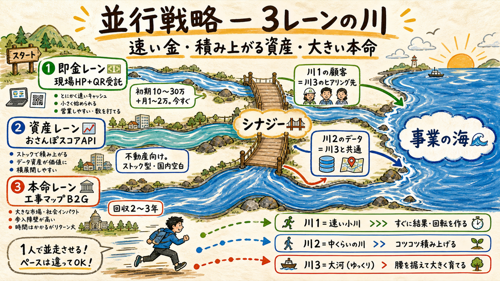
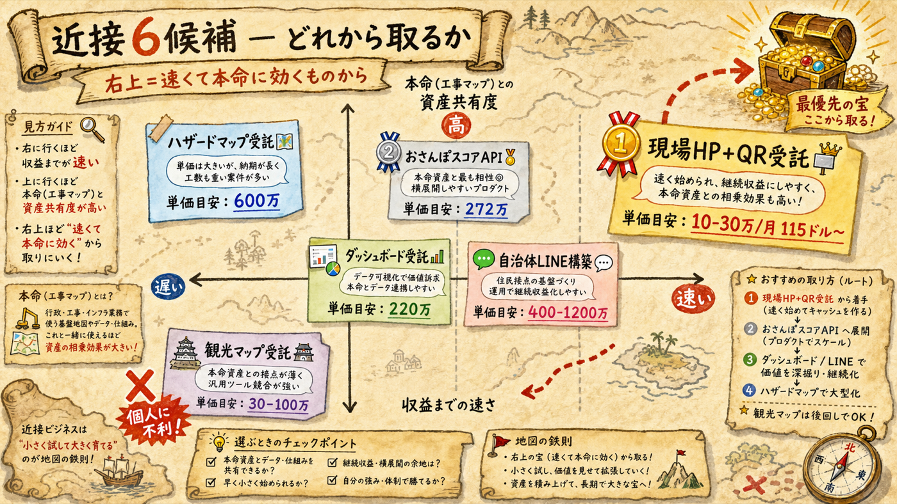
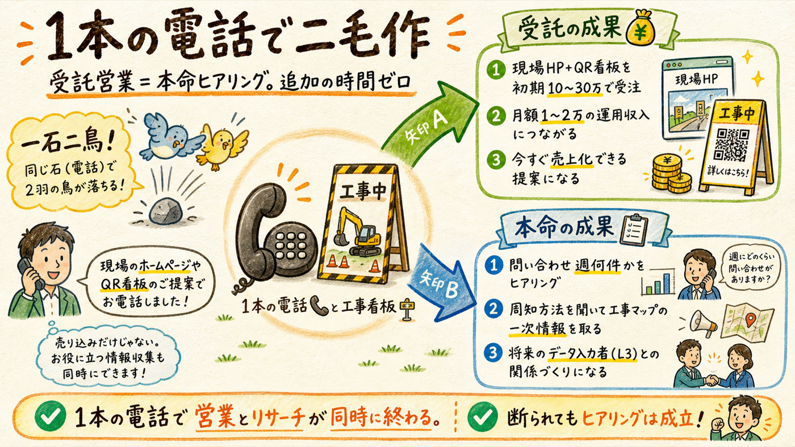
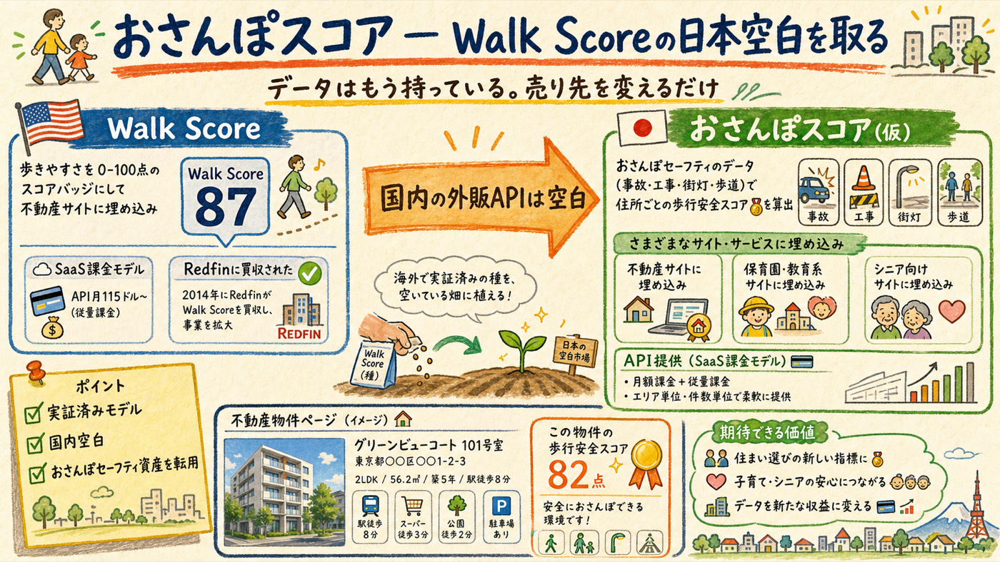

「近接性が高い」を『技術資産・顧客・営業行動のうち2つ以上を本命（工事マップ）と共有する』と定義し、6候補を調査した。結論: 並行するのは2本 — 即金の「現場HP＋QR受託」と、ストック型の「おさんぽスコアAPI」。前者は営業電話が本命のヒアリングと同一行動になり、後者は米国で実証済みのモデルが国内空白のまま残っている。
1人でも回るのは、レーン間で行動が共有されているから

| レーン | 中身 | 金になる速さ | 本命とのシナジー |
|---|---|---|---|
| 💵 即金レーン | 現場HP＋QR看板の受託（工事会社向け） | 最速（営業即日、初受注は数週間単位で可能） | 顧客＝工事会社＝本命のヒアリング先・将来のデータ入力者（L3） |
| 📈 資産レーン | おさんぽスコア: 歩行者安全スコアの不動産向けウィジェット/API | 中（実装1〜2ヶ月＋営業リード） | データ基盤（都オープンデータ取込）が本命L1と完全共通 |
| 🏛️ 本命レーン | 工事情報マップB2G（既存ロードマップ通り） | 遅（2027年度〜） | — |
並行の原則: 一人運営で並行が成立するのは「対人時間を共有できる組み合わせ」だけ。即金レーンの営業は本命のPhase 2ヒアリングと同じ電話なので、対人時間の増分はほぼゼロ。資産レーンは実装中心（AIレーン）で対人は週1時間以内。これ以上増やさない。
右上（速い×資産共有が高い）から取る

| 候補 | 単価（実額・出典つき） | 受注の現実性 | 判定 |
|---|---|---|---|
| 🥇 現場HP＋QR看板受託 | 初期10〜30万＋運用月1〜2万（Web制作相場・二次）。システムウェーブが同型を販売中（一次） | 高 — 営業即日可、法人格・実績要件なし | 今すぐ着手 |
| 🥈 おさんぽスコアAPI（不動産向け） | Walk Score実勢: API $115/月〜のSaaS課金（一次: 公式料金）。Redfinが2014年買収 | 中 — 実装は可能、不動産側の営業リードが未知数 | 8月から実装着手 |
| オープンデータダッシュボード受託 | 実例272万円・内訳明記（e-stat事例集）。GovTech東京が「TokyoMap構築」を公募（一次）＝同領域発注が実在 | 中〜高 — ビジネスチャンス・ナビ登録が入口 | 来たら取る（監視はAI） |
| 自治体LINE配信構築 | 千葉市実例220万円（一次: 市公表） | 高 — 単価が個人規模に適合、競合SaaS多い | 来たら取る（監視はAI） |
| ハザードマップWeb化受託 | 上三川町1,229万（一次）。かすみがうら市がWeb版単独発注（一次: 仕様書） | 中 — プロポーザルの実績要件が壁 | 実績2件できてから挑戦 |
| 観光マップ受託（DMO） | 大東市600万円（一次: 公募） | 低 — 法人・実績要求＋納期負荷が一人運営と最悪の相性 | 見送り |
※ 調査で否定された候補も記録: 歩行空間ネットワークデータ整備（実額非公開・測量要件重い→本命の差別化素材へ回す）、通学路マップ単独のWeb化（発注市場が薄い）、治安データ販売（国内は各社自前加工で購入市場なし）。2026-07-10取得。
これが「並行してできるとなおいい」への直接の答え

本命ロードマップのPhase 2は「工事看板の連絡先に電話して現場の話を聞く」だった。この電話に売り物を1つ持たせるのがこの受託。「工事期間中だけの現場ページ（工事概要・期間・迂回路・問い合わせフォーム）＋看板に貼るQRコード」を初期10〜30万＋運用月1〜2万で提供する。国交省が「工事銘板等はQRコードを使った情報発信を」と業界に求める資料を出しており（一次・既調査）、営業トークの後ろ盾も国の方針にある。
注意 — 受託の沼に注意: このレーンの目的はキャッシュと現場関係であって、Web制作業への転身ではない。月5現場・月商10万円程度を上限とし、それ以上の需要が来たらテンプレート化・値上げで対応する（時間を売らない）。
おさんぽセーフティの副産物が、そのまま2本目の事業になる

米Walk Scoreは「住所の歩きやすさを0〜100点にして不動産サイトに埋め込む」だけの事業で、API課金（現行$115/月〜・一次確認）でスケールし、2014年にRedfinに買収された。日本ではLIFULLが2020年に「Walkability Index」を自社掲載用に作ったが（東大CSIS共同研究・一次）、外販APIとして売っている国内事業者は調査で見つからなかった — つまり空白。おさんぽセーフティが既に扱う事故・工事・道路環境データで「住所ごとの歩行安全スコア」を算出し、不動産サイト・保育園検索・シニア向け住み替えサービスにウィジェット/APIで売る。
本命のロードマップは変更しない。並行レーンを追記するだけ
| 時期 | 本命（変更なし） | 💵 即金レーン | 📈 資産レーン |
|---|---|---|---|
| 今〜7/27 | 提出3手のみ（G0） | 何もしない | 何もしない |
| 8月 | L1デモ＋接点3本 | 現場ページのテンプレ1式をAIと作る（商品化） | スコア算出ロジックの試作（AI主担当・L1の副産物） |
| 9月 | ヒアリング5件（G1） | 同じ電話で受託営業。目標: 初受注1件 | スコアのデモページ公開 |
| 10〜12月 | 実装支援→無償β（G2） | 2〜5現場に拡大（月商上限10万） | 中堅不動産サイト3社にメール提案 |
| 2027〜 | 有償化打診（G3） | テンプレ化・値上げ or 縮小判断 | API有償化 or 撤退判断（利用2社未満なら撤退） |
並行の撤退基準もいま決める: 即金レーンは「9〜10月で受注0件なら価格・売り方を1回だけ変えて再試行、それでも0なら純ヒアリングに戻す」。資産レーンは「2027年3月までに有償利用2社未満なら凍結」。本命のG1・G2には影響させない — レーンはあくまで従属変数。
並行しても対人時間はほぼ増えない設計